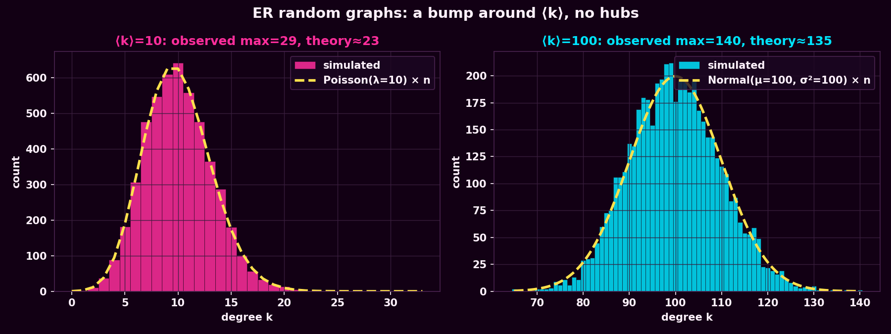
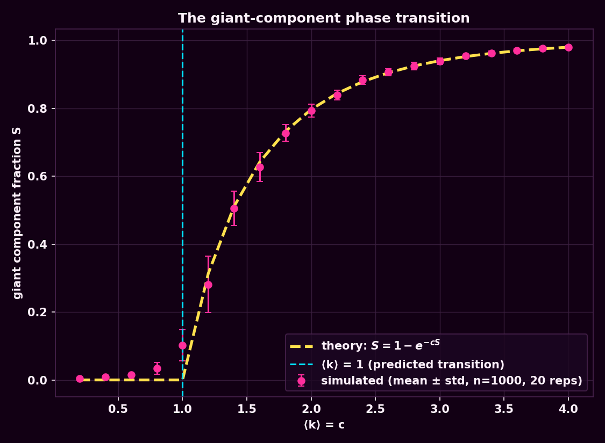
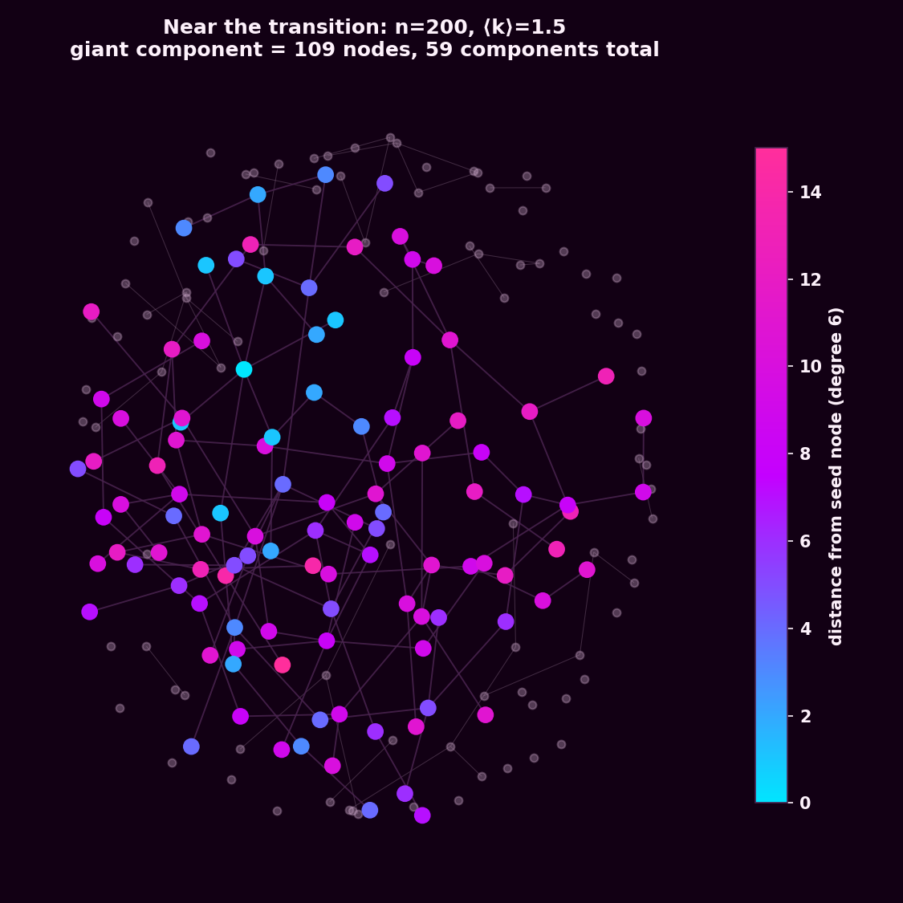

What we asked
Week 1 gave us a network: 303 characters, 1,434 undirected links, ⟨k⟩ ≈ 9.5, one giant component holding 91.4% of it together. This week's question is how much of that story is actually surprising. If all you know about a network is its size and its average degree, and you fill in every other connection by coin flip, how much of Marvel do you get back for free? Where does "one giant component" even come from mathematically, and does the textbook ⟨k⟩ = 1 phase transition actually show up if you simulate it rather than just derive it?
What we did
We built Erdős–Rényi graphs G(n, p) at a few scales. First, two 5,000-node graphs — one tuned to ⟨k⟩ = 10, one to ⟨k⟩ = 100 — to check that the degree distribution really does collapse onto a Poisson (small ⟨k⟩) or Normal (large ⟨k⟩) curve, and that the observed maximum degree matches what extreme-value theory predicts. Then we swept ⟨k⟩ from 0.2 to 4 across 1,000-node graphs, 20 repeats per value, to trace out the giant-component phase transition against its closed-form prediction S = 1 − e−cS. Finally we generated a single network right at the edge of that transition (n = 200, ⟨k⟩ = 1.5) and pulled its giant component out to look at directly.



The number that mattered most
Plug Marvel's own n = 303 and ⟨k⟩ = 9.47 into the isolation-probability formula (1−p)n−1 and a coin-flip network predicts about 0.02 isolated characters — essentially none. The real network has 17. That's not a rounding error, it's off by nearly three orders of magnitude, and it's exactly the number the course's own material flags for this comparison. Isolation in this network isn't sampling noise from a moderately connected random graph — it's a real editorial fact about which Wikipedia articles happened to get cross-linked.
| Network | n | m | giant % | isolates | max degree | ⟨d⟩ (giant) |
|---|---|---|---|---|---|---|
| Marvel (real) | 303 | 1,434 | 91.4% | 17 | 106 | 2.674 |
| Random G(n,m) matched | 303 | 1,434 | 100.0% | 0 | 21 | 2.771 |
What surprised us
A random graph built with Marvel's exact node count and edge count doesn't just have fewer isolates — it has zero. Spread the same 1,434 links around by chance and every one of the 303 characters ends up reachable from every other one, in a single component, with an average distance (2.771) barely different from the real network's (2.674). But the maximum degree tells the real story: the random version tops out at 21, while the real network has Spider-Man sitting at 106. A coin-flip model's degrees cluster tightly around the mean by construction — it structurally cannot produce a hub, no matter how many times you re-roll it. Whatever is making Spider-Man Spider-Man, it isn't randomness.